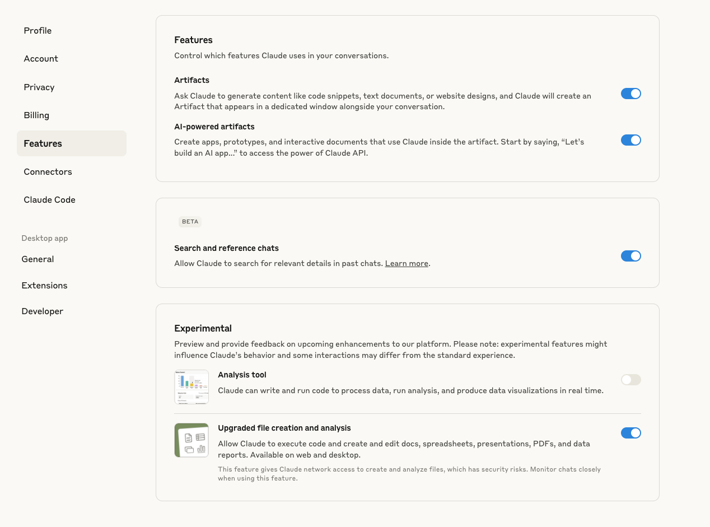
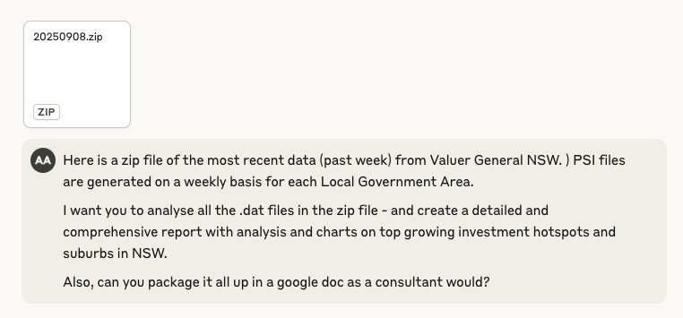
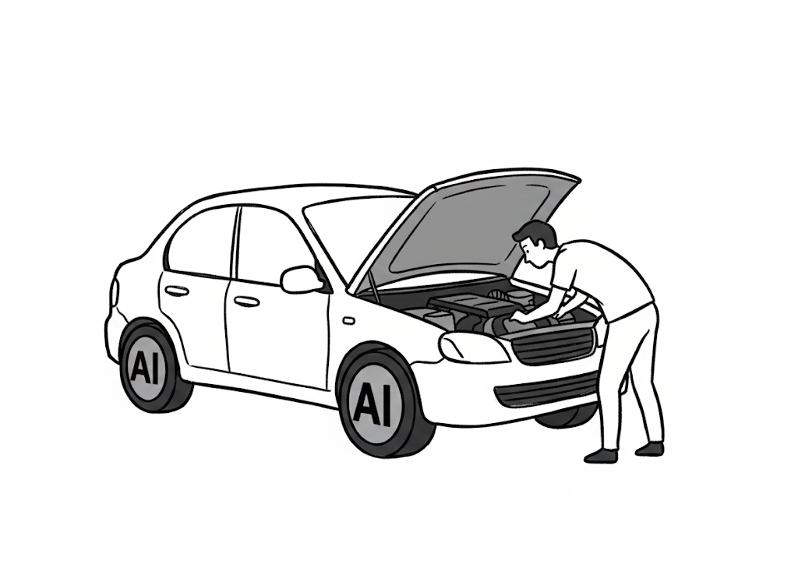

Claude’s New File Capabilities - My Notes and Reflections
AI
Claude
Productivity
Spreadsheets
A hands-on exploration of Claude’s new file creation and spreadsheet analysis capabilities, with real-world testing results and insights
Author
Aman Arora
Published
September 10, 2025
Today, I’m diving into Claude’s exciting new file capabilities that were recently announced by Anthropic.
Just yesterday (September 8th, 2025), Anthropic announced that Claude can now create files and perform sophisticated spreadsheet analysis like a remote computer analyst (Anthropic 2025).
The announcement introduces three major capabilities:
Turn data into insights: Give Claude raw data and get back polished outputs with cleaned data, statistical analysis, charts, and written insights explaining what matters.
Build spreadsheets: Describe what you need—financial models with scenario analysis, project trackers with automated dashboards, or budget templates with variance calculations. Claude creates it with working formulas and multiple sheets.
Cross-format work: Upload a PDF report and get PowerPoint slides. Share meeting notes and get a formatted document. Upload invoices and get organized spreadsheets with calculations. Claude handles the tedious work and presents information how you need it.
This is a great leap forward - having a remote data analyst to analyse user data can be extremely useful to everyone to make informed data driven decisions.
But, how does it really work in practice? I am already on a Claude Max plan - which means, I have access to this new feature. To test it out, I gave Claude access to my google drive and also turned on the feature “Upgraded file creation and analysis” as in the introductory post by Anthropic.

Figure 1: Claude’s new file capabilities settings
Once the feature is turned on, I headed over to Valuer General (NSW Valuer General 2025) to get the past week’s official sales data that’s publicly available. There is more information on how to access the .dat files here. In fact, there is a whole third party website that allows you to download the same data possibly in an easier format. Since I rarely trust third party websites, I downloaded the past week’s sales zip file from Valuer General which consisted of 127 .dat files! Claude only accepts 20 file uploads at the same time, so I just uploaded the .zip file directly for it to analyse.
Here is the prompt that I gave Claude:
Here is a zip file of the most recent data (past week) from Valuer General NSW. PSI files are generated on a weekly basis for each Local Government Area. I want you to analyse all the .dat files in the zip file - and create a detailed and comprehensive report with analysis and charts on top growing investment hotspots and suburbs in NSW. Also, can you package it all up in a google doc as a consultant would?

Figure 2: My prompt to Claude for analyzing NSW property data
Based on the prompt - Claude processed all 127 .dat files and created an analysis report. Here’s the Google Doc it generated:
But, how did it get there? Let’s take a look into some of my observations as to how it works under the hood.
1 Taking a peek under the hood

Figure 3: Taking a peek under the hood of Claude’s new file analysis capabilities
Claude runs in a sandboxed environment with both Node.js and Python runtimes. To me, this dual-environment setup seems intended - Node.js handles document generation (especially Word/Google Docs), while Python tackles the heavy data analysis.
A question might arise: Why not use JS for analysis as well? I think the answer has to do with Claude’s training data.
Since most of analysis notebooks on Kaggle, or publicly available notebooks are with pandas and matplotlib - perhaps the Anthropic team noticed that this allows Claude to have higher accuracy and perform more in depth analysis - just as a traditional data analyst/scientist would.
Not only that, Claude also gets access to bash utilities like unzip on the virtual computer. I personally think of these capabilities like a light weight Claude Code, that can create & edit files on the fly based on user instructions.
# Key excerpt: How Claude parses the .dat filesdef parse_dat_files(self):"""Parse all DAT files and extract property sales data""" dat_files = glob.glob(f"{self.data_path}/*_SALES_DATA_*.DAT") all_sales = []for file_path in dat_files: lga_code = file_path.split('/')[-1].split('_')[0] lga_name =self.lga_mapping.get(lga_code, f"LGA_{lga_code}")withopen(file_path, 'r', encoding='utf-8', errors='ignore') as f: lines = f.readlines()# Process B records (property sales)for line in lines:if line.startswith('B;'): fields = line.strip().split(';')iflen(fields) >=20: sale_record = {'lga_code': fields[1],'lga_name': lga_name,'property_id': fields[2],'street_number': fields[7],'street_name': fields[8],'suburb': fields[9],'postcode': fields[10],'land_area': fields[11] if fields[11] elseNone,'contract_date': fields[13] if fields[13] elseNone,'sale_price': fields[15] if fields[15] elseNone,'property_type': fields[17] if fields[17] elseNone, } all_sales.append(sale_record)return pd.DataFrame(all_sales)
Growth analysis calculation
# Key excerpt: How Claude calculates growth ratesdef analyze_investment_hotspots(self):"""Analyze data to identify investment hotspots"""# Calculate growth rates where we have sufficient data growth_analysis = []for suburb inself.df['suburb'].unique(): suburb_data = monthly_trends[monthly_trends['suburb'] == suburb]iflen(suburb_data) >=6: # At least 6 months of data suburb_data = suburb_data.sort_values('year_month') first_half = suburb_data.iloc[:len(suburb_data)//2]['avg_price'].mean() second_half = suburb_data.iloc[len(suburb_data)//2:]['avg_price'].mean()if first_half >0: growth_rate = ((second_half - first_half) / first_half) *100 growth_analysis.append({'suburb': suburb,'growth_rate': round(growth_rate, 2),'data_points': len(suburb_data),'avg_price_early': round(first_half, 2),'avg_price_recent': round(second_half, 2) })return pd.DataFrame(growth_analysis)
Visualization generation
# Key excerpt: How Claude creates the visualizationsdef create_visualizations(self):"""Create comprehensive visualizations"""# Top 20 Suburbs by Average Sale Price top_suburbs_price =self.summary_stats['suburb_stats'].nlargest(20, 'sale_price_mean') fig, ax = plt.subplots(figsize=(12, 8)) bars = ax.barh(range(len(top_suburbs_price)), top_suburbs_price['sale_price_mean']) ax.set_yticks(range(len(top_suburbs_price))) ax.set_yticklabels([f"{row['suburb']} ({row['lga_name']})"for _, row in top_suburbs_price.iterrows()]) ax.set_xlabel('Average Sale Price ($)') ax.set_title('Top 20 Suburbs by Average Sale Price', fontsize=14, fontweight='bold')# Add value labels on barsfor i, (_, row) inenumerate(top_suburbs_price.iterrows()): ax.text(row['sale_price_mean'] +10000, i, f"${row['sale_price_mean']:,.0f}", va='center', fontsize=9) plt.tight_layout() plt.savefig('/home/claude/top_suburbs_by_price.png', dpi=300, bbox_inches='tight')
What’s interesting about Claude’s approach:
Standard data science workflow: Claude follows the exact same pattern a human analyst would - load data, clean it, calculate statistics, create visualizations, and export results. The use of pandas for data manipulation and matplotlib for visualization is industry standard.
Professional coding practices: The script uses object-oriented programming with a proper class structure (NSWPropertyAnalyzer), comprehensive error handling, and clear method separation - mirroring how a data scientist would structure production code.
Domain-aware analysis: Claude didn’t just crunch numbers - it understood the context of property investment, calculating meaningful metrics like growth rates, identifying liquid markets vs luxury markets, and providing investment insights that require domain knowledge.
// Key excerpt: How Claude structures the report contentsections: [{ children: [// Title new Paragraph({ heading: HeadingLevel.TITLE, children: [new TextRun("NSW Property Investment Hotspots Analysis")] }),// Executive Summary new Paragraph({ heading: HeadingLevel.HEADING_1, children: [new TextRun("Executive Summary")] }), new Paragraph({ children: [ new TextRun("This analysis of NSW Valuer General sales data reveals significant investment opportunities across New South Wales. Our comprehensive review of "), new TextRun({ text: "3,951 property transactions", bold: true }), new TextRun(" totaling "), new TextRun({ text: "$5.22 billion", bold: true }), new TextRun(" provides critical insights for property investors.") ] }),// Key Statistics Table createKeyStatsTable(),// Investment recommendations with bullet points new Paragraph({ numbering: { reference: "bullet-list", level: 0 }, children: [new TextRun("Blacktown for exceptional growth potential")] }), new Paragraph({ numbering: { reference: "bullet-list", level: 0 }, children: [new TextRun("Rosebery and Rouse Hill for metropolitan growth")] }) ]}]// Generate and save the documentPacker.toBuffer(doc).then((buffer) => { fs.writeFileSync("/mnt/user-data/outputs/NSW_Property_Report_Fixed.docx", buffer); console.log("Fixed NSW Property Report generated successfully!");});
The document generation approach reveals some interesting patterns:
Professional document APIs: Claude uses the docx npm package to programmatically build Word documents with native formatting - not just converting from markdown, but creating proper document structures with styles, headers, footers, and formatted tables.
Consultant-grade output: The script generates a complete investment report with executive summary, data tables, growth analysis, and investment recommendations - exactly what you’d expect from a professional consulting deliverable. This makes sense since Claude would have been pre-trained and finetuned on multiple consulting reports and it inherently knows how to create the deliverable.
Attention to presentation: Claude applies consistent styling, color-coded tables, proper margins, and page numbering - the kind of polish that typically requires manual formatting in Word.
2 Conclusion
Overall, in terms of tech stack, the decisions are pretty standard. Use pandas library that is most popular for data analysis, matplotlib for image generation. Anthropic has kept things pretty simple here. Similar for Word document generation - using the docx npm package that any Node.js developer would reach for.
But here’s what’s remarkable: Claude didn’t just run scripts. It understood my business problem, processed 127 files of government data, performed meaningful analysis, and delivered a consultant-quality report - all from a simple conversational prompt. This extremely lowers the barrier for everyday users looking to get insights from their sales data, or market outreach results.
This feature, is packed with a glimpse into a future where AI assistants get integrated seamlessly into our lives for every day use.
The NSW property analysis that would typically take a data analyst days to complete was done in minutes. Not just mechanically processing data, but understanding context, making intelligent decisions about what metrics matter, and presenting findings in a professional format. Great for enterprises too!
Next up on my list is to try out Claude’s slides generator!
3 Acknowledgements
Tip🤖 Meta Note
This blog post was peer-reviewed by Claude Code - because who better to review a post about Claude’s capabilities than Claude itself? The images comparing frameworks and showing under-the-hood analysis were generated using Gemini 2.5 Flash. We’re truly living in exciting times. :)